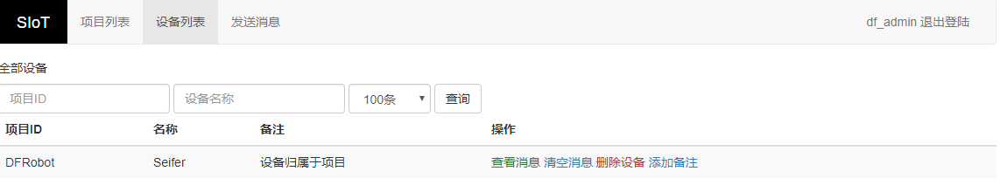

3. 界面简介¶
SIoT既可以作为教师教学物联网课程的教学支持平台，也可以作为学生物联网作品的支持平台。 当你下载完成之后就可以运行相应的软件啦。
下载地址：https://github.com/vvlink/SIoT/tree/master/software
3.1. 登录Web页面¶
如果你是Windows用户，请运行SIot_win.exe。类似的，如果你是Linux用户，请运行SIoT_linux，如果你是Mac用户，请运行SIoT_mac。 启动软件后请不要关闭这个黑窗口，它将维持你的计算机（电脑）作为MQTT服务器。

打开浏览器，输入：http://localhost:8080 或者 http://127.0.0.1:8080 进行登录
- 你在黑框第一行会看到1883字样，那是MQTT协议的默认端口。Web管理方面，默认使用的是8080端口。

默认用户名（user）为：siot
默认密码（pwd）为：dfrobot
3.3. 查看设备¶
平台提供一个简单的管理界面，能够输入自己的Topic和最大消息数量，查询到该Topic对应的消息。根据活动时间（最后一次使用时间）进行排序。
通过点击上方菜单栏的“设备列表”访问。
3.4. 查看数据¶
设备的管理功能分为查看消息，清空消息，删除设备，添加备注等。
- 查看消息。可以根据Topic查看历史消息，并且可以全部下载。
- 清空消息。清空对应Topic的所有消息。
在“设备列表”界面找到需要查看的设备，在操作这一栏中点击“查看消息”访问。
默认可以看到近期100条消息（倒序），以及折线图。
- 你可以点击“导出查询结果”按钮，在线生成Excel文件，默认名称为“消息数据.xls”。
地址：http://localhost:8080/html/messages.html?topic=PROGRAM_ID/TOPIC_ID
请把PROGRAM_ID替换成自己的项目名，把TOPIC_ID替换成自己的消息名。
3.5. 发送消息¶
可以发送255字符内的字符串，包括中文。
通过点击上方菜单栏的“发送消息”访问。
- Topic的格式为：项目ID/设备名。例如：Seifer/light1
- 消息发送成功后，系统会自动根据topic建立“项目”和“设备”。如果项目和设备已经存在则在此设备上追加数据。